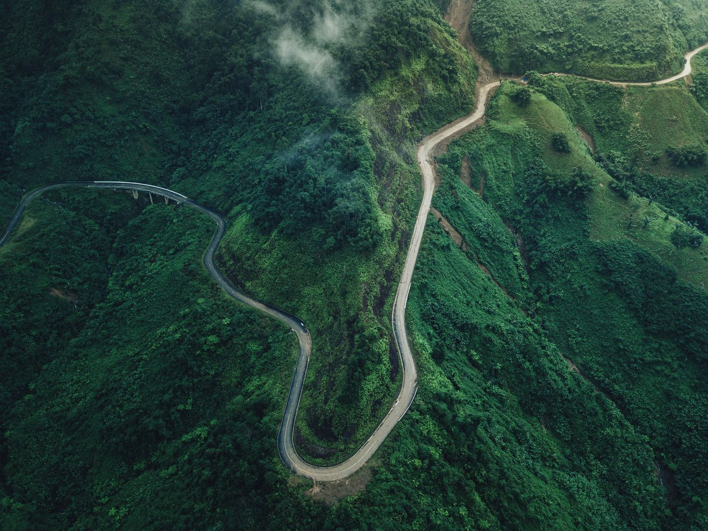
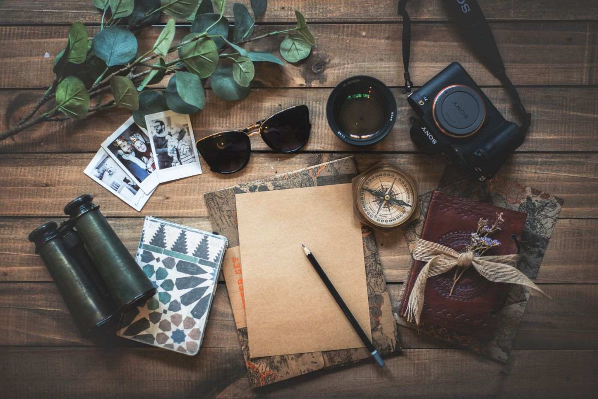
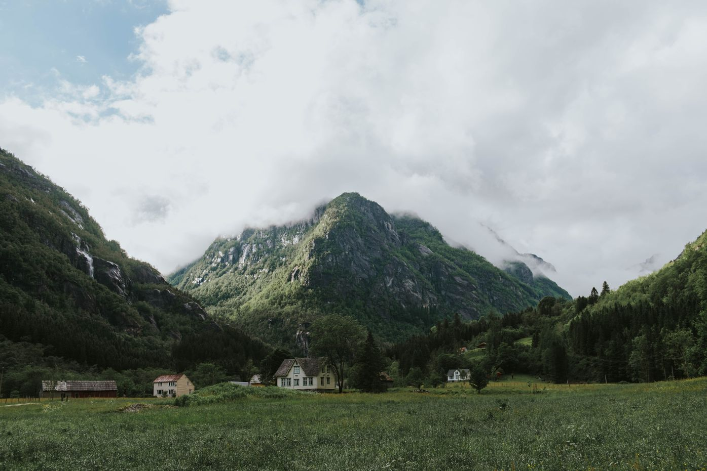
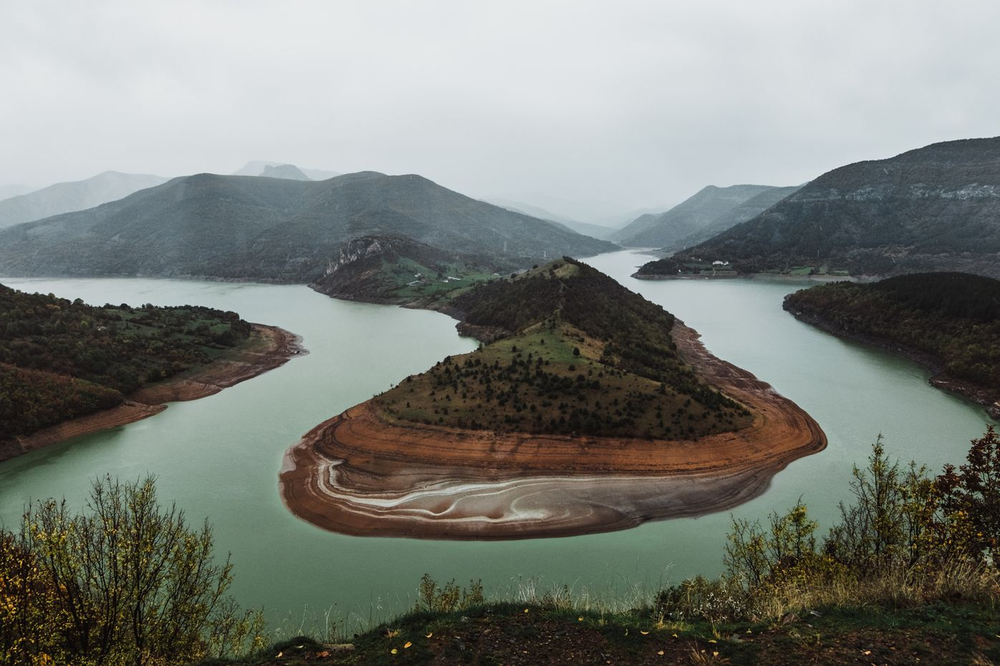
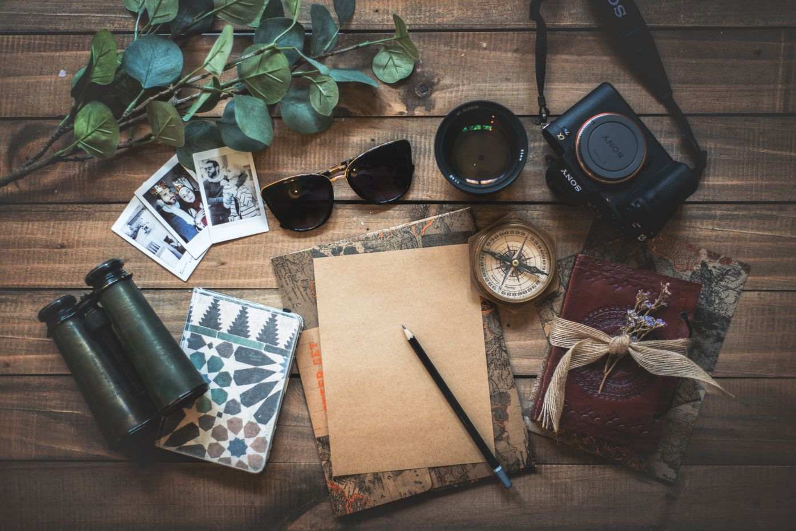
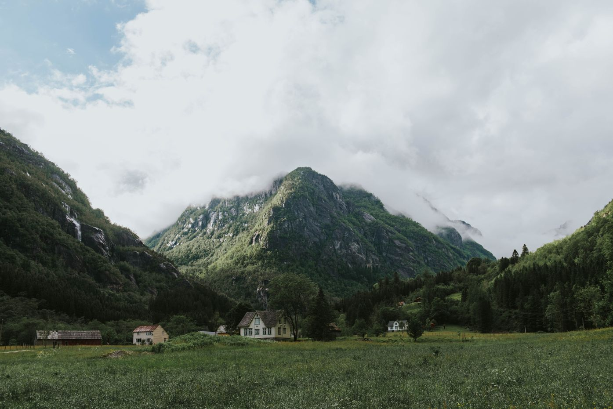
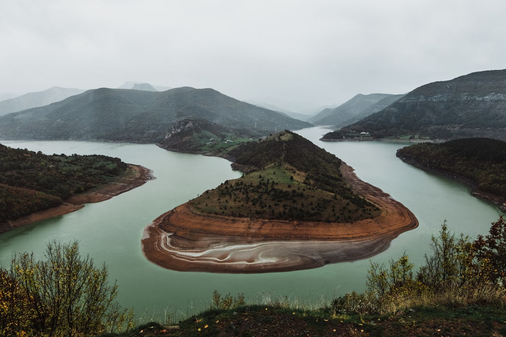
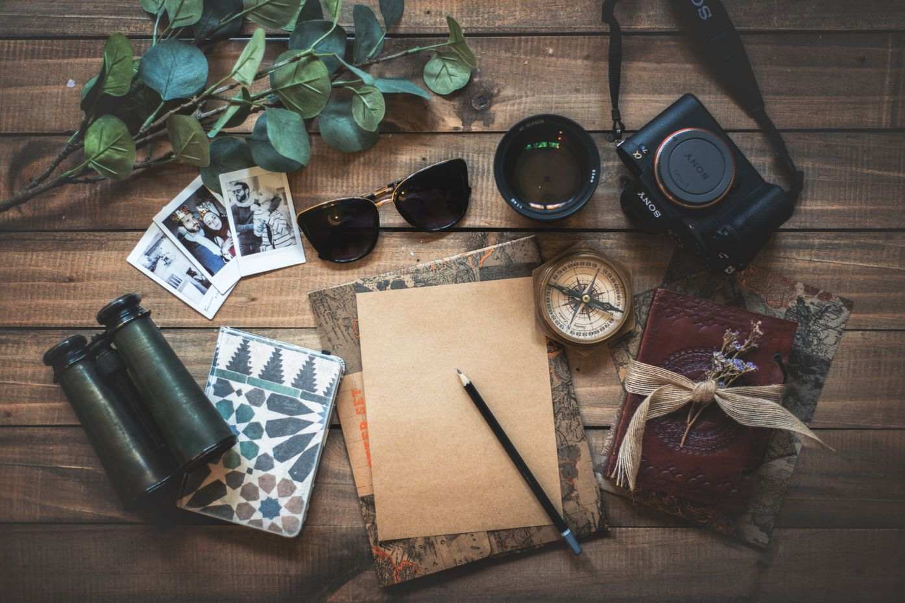
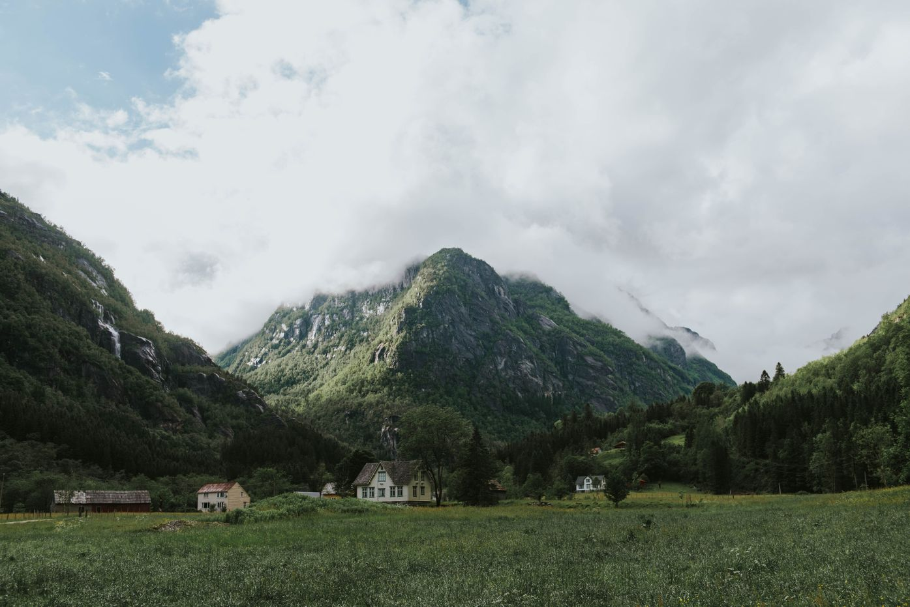
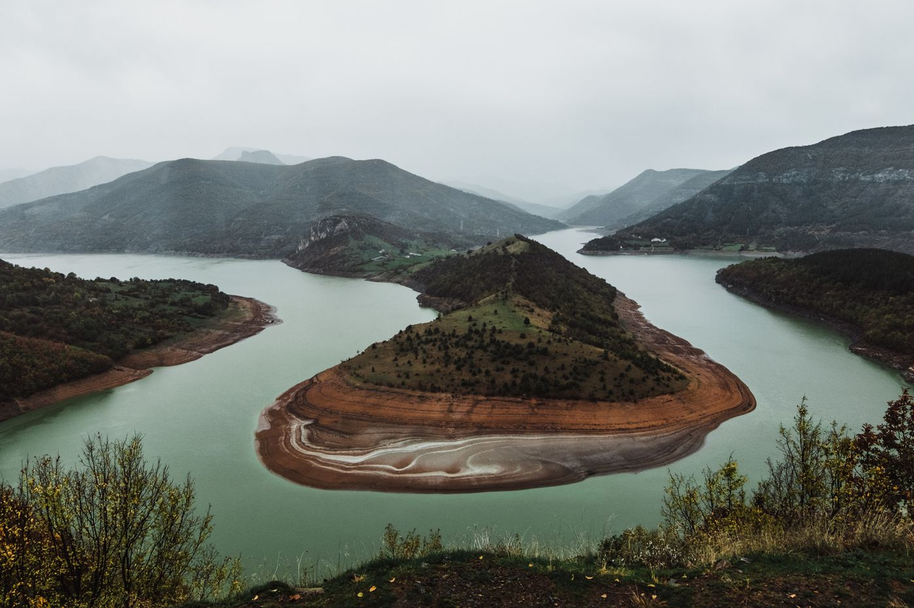

Привіт, я Олександр, і я подорожую по всьому світу
Я народився в Україні в маленькому містечку, і завжди мріяв про подорожжі.
І одного разу я всеж таки вирішився здійснити свою заповітну мрію, переїхавши навчатись
в Китай в бізнес-школі. Там я у вільний час почав багато подорожувати по Азії, а потім переїхав
працювати в Мюнхен.
Я відкрив світ бюджетних авіакомпаній і почав кудись літати і бачити світ кожні вихідні.
Перебуваючи десь у 15 країні, я зрозумів, що маю достатньо досвіду та знань, щоб поділитися
з іншими - і так з’явився цей блог. Тут ви знайдете корисні поради, мій досвід подорожі,
життя хакі і звичайні щоденні думки про все, що мене оточує.
Деякі результати, якими пишаюся
35
відвідані країни
100
відвіданих міст
50 000 +
зроблені фотографії
275
статтей в блозі
Останні історії
12 Oct 2020
Мандрівник на карантині: чим зайнятися вдома?
Світ завмер. Більшість мандрівників повернулися додому
і разом з усією планетою дотримуються усвідомленого карантину.
Звичайно, сидіти вдома і сумувати про невдалі подорожі – не самий
приємний досвід. Але раз вже так вийшло, давай дивитися на це з оптимізмом!
Іноді потрібно обмежити себе в чомусь, щоб не пересититися та не втратити
до цього смак. Сподіваємося, наші статті про подорожі надихнуть тебе на майбутнє
— і як тільки все це мине, ти будеш досліджувати світ з ще більшою пристрастю. А
поки, лови добірку ідей, чим зайнятися на карантині.
12 Oct 2020
Моя улюблена країна
Італія є однією із найдревніших держав світу.
Ще в II-І тисячоліттях до Христа на Апеннінському
півострові жили племена італіків, які заснували Рим.
Пізніше цією територією володіла Візантія, завойовували
її франки та інші племена. У середньовіччі Італія була
роздрібнена. Як єдина держава постала в 1870 р.
Італія розташована на півдні Європи, у басейні Середземного моря.
її територія складається із трьох географічно окреслених частин - материкової,
куди входить Паданська низовина і схили Альпійської гірської дуги; Апеннінського
півострова, що розташований між Адріатичним і Тірренським морями; островів Сіцілія, Сардинія та ін.
На території Італії розташовані дві карликові держави: Республіка
Сан-Марино і держава-місто Ватикан, як центр римо-католицької церкви.
Хочете побачити більше?
Підпишіться на мій Instagram: @alex_the_traveler




Тому що врешті-решт, ви не пам’ятатимете часу, який витратили на
роботу в офісі чи скошування газону. Підніміться на ту прокляту гору.
Oleksandr Skydan
Корисні поради для незалежних туристів
12 Oct 2020
Мандрівник на карантині: чим зайнятися вдома?
Світ завмер. Більшість мандрівників повернулися додому
і разом з усією планетою дотримуються усвідомленого карантину.
Звичайно, сидіти вдома і сумувати про невдалі подорожі – не самий
приємний досвід. Але раз вже так вийшло, давай дивитися на це з оптимізмом!
Іноді потрібно обмежити себе в чомусь, щоб не пересититися та не втратити
до цього смак. Сподіваємося, наші статті про подорожі надихнуть тебе на майбутнє
— і як тільки все це мине, ти будеш досліджувати світ з ще більшою пристрастю. А
поки, лови добірку ідей, чим зайнятися на карантині.
12 Oct 2020
Моя улюблена країна
Італія є однією із найдревніших держав світу.
Ще в II-І тисячоліттях до Христа на Апеннінському
півострові жили племена італіків, які заснували Рим.
Пізніше цією територією володіла Візантія, завойовували
її франки та інші племена. У середньовіччі Італія була
роздрібнена. Як єдина держава постала в 1870 р.
Італія розташована на півдні Європи, у басейні Середземного моря.
її територія складається із трьох географічно окреслених частин - материкової,
куди входить Паданська низовина і схили Альпійської гірської дуги; Апеннінського
півострова, що розташований між Адріатичним і Тірренським морями; островів Сіцілія, Сардинія та ін.
На території Італії розташовані дві карликові держави: Республіка
Сан-Марино і держава-місто Ватикан, як центр римо-католицької церкви.
Слідуй за мною
Приєднуйтесь до мене в соціальних мережах і стежте за новинами!
Галерея
Запитай менещо завгодно!
Не соромтеся задавати будь-які
запитання щодо моїх подорожей, ведення
блогу чи запитань щодо бізнесу. Заповніть
форму нижче або надішліть мені електронного
листа на alextravel@gmail.com


 




